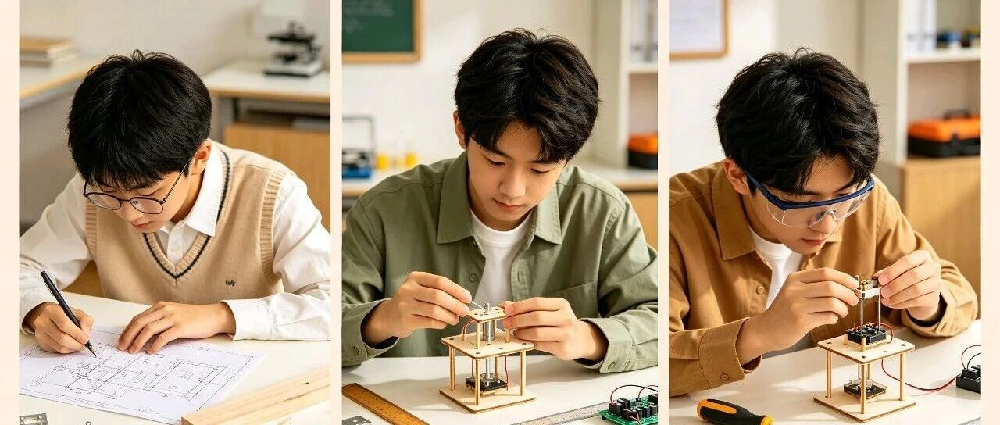
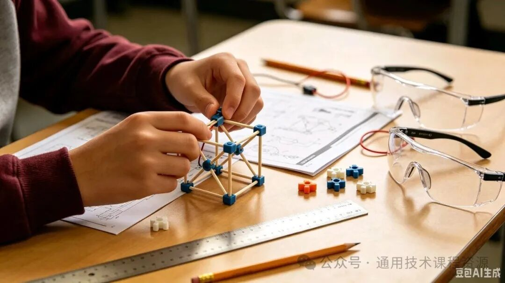
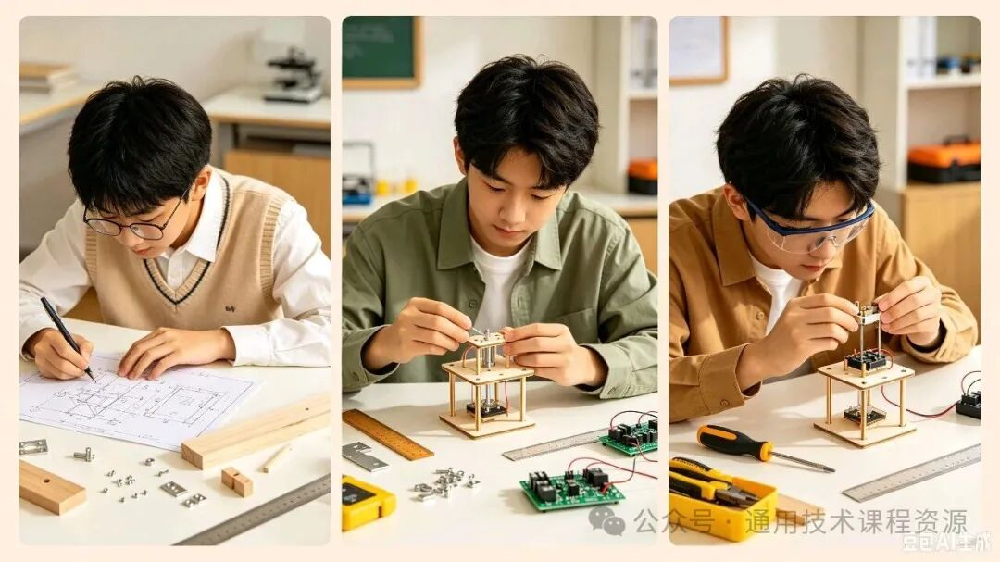

本地离线副本。来源：微信公众号「通用技术课程资源」，作者：山东布衣，2026-08-02 11:41。
原链接：https://mp.weixin.qq.com/s/cTzgiClZB-dEnFmwNzLQ9A
正文取自 2026-08-16 打开的原页面；插图已下载到本文件夹。本文件供研究核对，不替代原页面。

在多数高中的学科排序里，通用技术一直是最“委屈”的那一个。不像语数外决定总分，不像物化生自带光环，也不似史地政需要死记硬背。
它常常被当成：副科、放松课、手工课、可有可无的课。老师上课轻松，学生上课放松，家长很少关注，全网干货寥寥无几。
但今天我想认真说一句：你真的小看通用技术了。
这门不用疯狂刷题、不用熬夜背书的学科，恰恰是最贴近生活、最适配未来、最能拉开孩子综合差距的宝藏课程。
很多人高考结束、步入大学、走入社会，才幡然醒悟：高中最有用、最不白费的课，其实是通用技术。
所有误解，都来自三个刻板印象。
第一：不直接提分。没有高强度考试压力，没有排名焦虑，自然被所有人边缘化。
第二：内容太生活化。木工、金工、缝纫、电路、结构设计、系统思维、创新实践……不像硬核学科高深，大家就默认“简单、没用”。
第三：长期被忽视。课时少、不被重点关注、资源零散，慢慢就变成了大家口中的“水课”。
但真相是：考试分数决定孩子能上什么大学，通用技术决定孩子会过什么样的生活。刷题能换来成绩单，而技术思维，能换来解决问题的一生底气。
它从不教刁钻的难题，只教人生必备的底层能力。它教「动手落地的能力」现在的孩子，会做题、会背书、会应试，唯独不会动手。灯泡坏了不会排查、小物件坏了只会扔掉、简单改造无从下手、生活常识极度匮乏。
通用技术的核心，就是从理论到实践。一张图纸、一个结构、一次组装、一次优化，教会孩子：凡事不止停留在想象，能设计、能动手、能落地、能修正。这是未来工科、设计、工程、科创所有领域的基础素养。

它教「理性解决问题的思维」，生活里90%的麻烦，不靠公式，靠技术思维与系统思维。物品怎么优化更实用？结构怎么设计更稳定？问题怎么排查更高效？方案怎么取舍更合理？通用技术教的不是手艺，是发现问题、分析问题、迭代优化的思维闭环。这种能力，不考高分，但受用终身。
它教「创新与严谨并存的素养」，科技创新大赛、综合评价、强基计划、社会实践……很多家长拼命给孩子找科创项目，却不知道：通用技术课堂，就是最正统、最基础的科创启蒙。所有的创新设计、作品制作、改良优化、工艺规范，全部源自这门课。看似简单的手工制作，藏着专注力、耐心、细节把控、创新意识的综合修炼。

高中三年，所有学科都在为“考试”服务。只有通用技术，在为“生活”和“未来”服务。读书刷题，是为了让孩子走得更高；技术素养，是为了让孩子走得更稳。
很多大学生进入工科专业才发现：别人看不懂图纸、不懂结构、没有工程思维、不会动手实操，而学过通用技术的孩子，上手极快、适配极强。
很多成年人工作后才明白：生活里的修缮、取舍、优化、规划，全是当年通用技术教的底层逻辑。我们总在追逐高分、追逐名校、追逐热门赛道，却忽略了：真正的核心竞争力，从来不是只会做题，而是会解决真实世界的问题。
在这里，想送给所有老师、家长、学生三句真心话。
给学生：请认真对待每一节通用技术课。你现在觉得轻松的课堂、不起眼的作品、简单的动手实践，都是未来别人不具备的核心素养。高分是一时的能力，会思考、会动手、会创造、会解决问题，是一辈子的底气。
给家长：别只盯着文化课分数。未来的竞争，早已不是单纯的卷面分数竞争，而是思维、实践、创新、综合素养的竞争。通用技术，正是孩子性价比最高的素养课堂。
给同行：我们守着一门最温柔、最务实、最有温度的学科。它不喧嚣、不功利、不内卷，却默默滋养着孩子最真实的成长。通用技术从不是副科，是生活的主科，是未来的必修课。
教育的终极意义，从来不是培养会考试的机器，而是培养会观察、会思考、会动手、会创造、会生活的完整的人。
通用技术，恰好完美诠释了这句话。
它低调，但从不无用；
它简单，但内核极深；
它不追分数，却成就人生。
愿每一位学子，都能珍惜每一节技术课。愿每一份默默深耕通用技术的教育，都被看见、被尊重、被珍视。